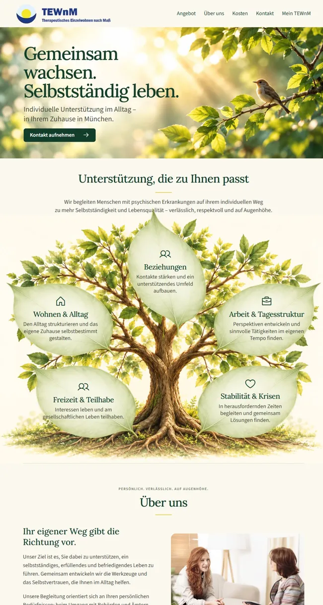
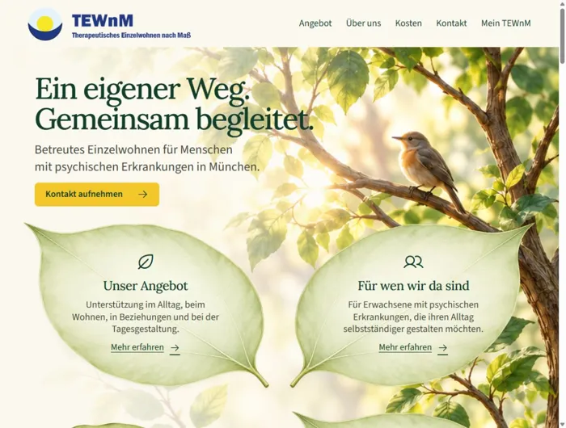
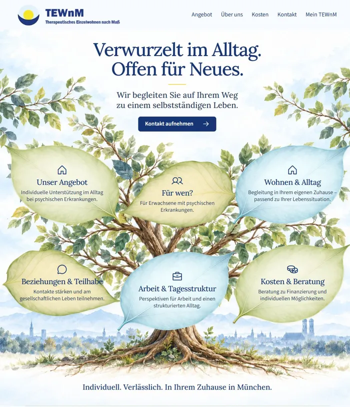

Website · Gestaltungsvorschläge
Drei Wege. Ein gemeinsamer Gedanke.
Ein Baum als Sinnbild für Entwicklung, Halt und ein selbstbestimmtes Leben.
Entdecken Sie die drei Entwürfe – auch auf Ihrem Smartphone.

Option 1
Gemeinsam wachsen
Fünf Angebotsblätter, persönliche Einblicke und ein Kontaktformular am Seitenende.
Vorschau öffnen →
Option 2
Ein eigener Weg
Fünf große Blätter, das Lichtenberg-Zitat und ein sanft auslaufender Baumhintergrund.
Vorschau öffnen →
Option 3
Verwurzelt im Alltag
Ein zentraler Baum, sechs Blätter und die vertrauten Farben Blau und Gelb.
Vorschau öffnen →Weitere Seiten der Entwürfe
Gestaltungsvorschläge zur Abstimmung. Texte und Kontaktdaten vor Veröffentlichung prüfen.